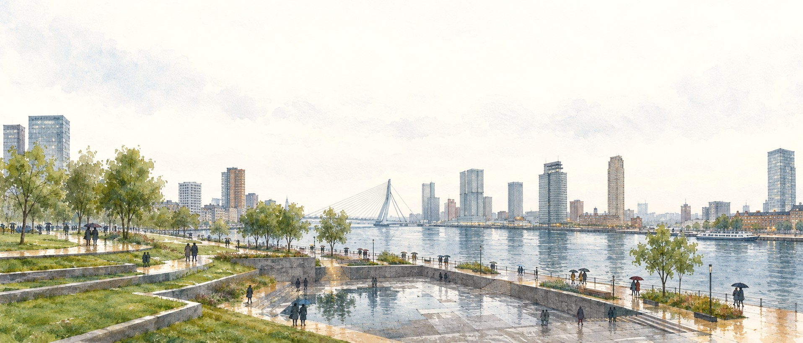
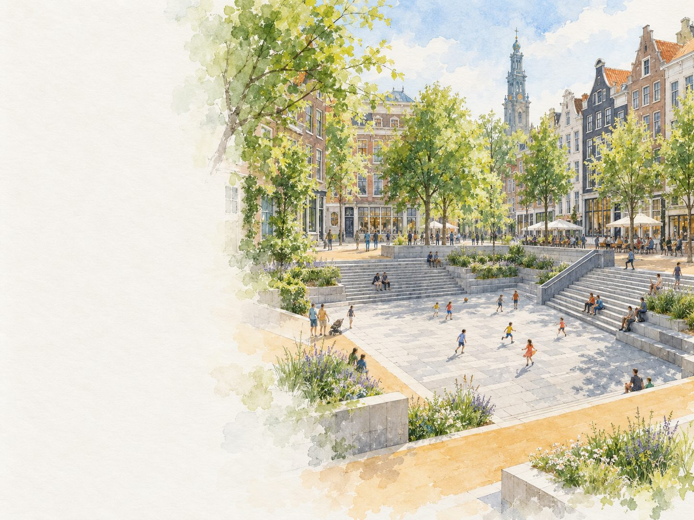
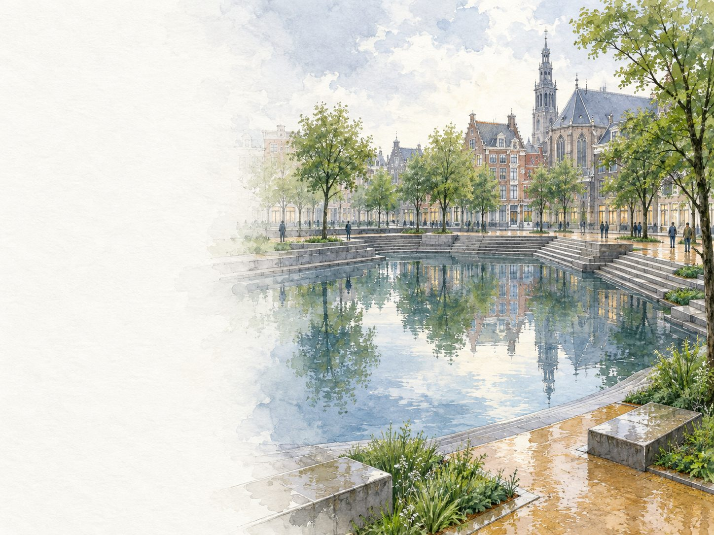
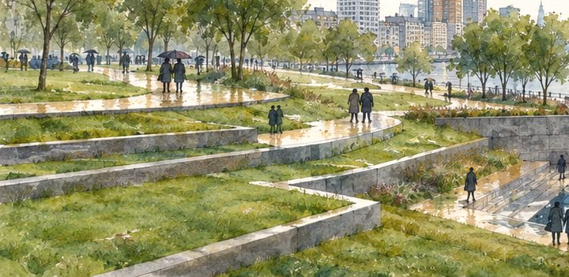
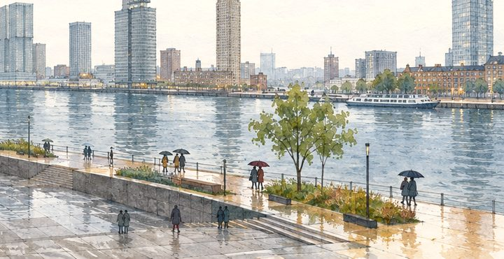
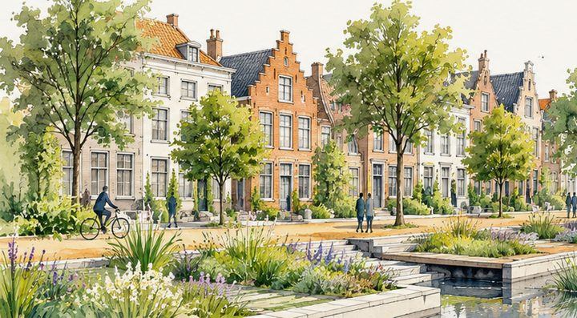

Parks that fill up on purpose.
Fieldwork is a landscape architecture studio in Rotterdam. Twenty-two of us design parks, waterfronts and streets that hold the rain instead of rushing it away.

Why we do it
A city sheds its rain in minutes. We design ground that takes it in, holds it for a while, and is still a good place to be.
Most streets and squares send every storm straight to the sewer. We draw the opposite: lawns that step down, squares that sink, planting that drinks. The water gets somewhere to go, and the city gets a park out of it.
Concept 01 · a sunken square
The same square, two weathers.
- July. A sunken square to play in. Steps to sit on, trees in leaf, a football against the wall.
- After a storm. The same square takes the water from the streets around it and holds it like a pond, then slowly empties back into a square.
Both paintings are an illustrative concept, not a built project.


What we design
Three kinds of ground. One job for all of them: give the water a place.
-
01
Parks
Lawns cut into terraces, so a heavy shower fills the lowest step and the rest of the park stays dry underfoot.

-
02
Waterfronts
Quays with steps and planting down to the river, so a high tide or a heavy shower finds room before it finds the street.

-
03
Streets
Rain gardens and trees in place of kerbside parking, so a street drains into its own planting before it drains anywhere else.

Every painting on this page is an illustrative concept made for this site. None of them shows a built project or a client.
For cities and water boards
How a commission starts.
- 01
Send us the place
An address, a map, a photo of the puddle that keeps coming back. That is enough to start talking.
- 02
We walk it in the rain
Where water stands and where it runs tells us more about a site than any plan does.
- 03
We paint what it could be
A first concept as drawings like these, for both weathers, so everyone can see the dry day and the wet one.
- 04
Then the real work
Design, engineering and planting with your teams and the people who live there.
Join us
We are twenty-two. We would like to be a few more.
If you design landscapes, draw them, or understand where water goes when it rains, we would like to see your work.
Open roles
Placeholder Roles, levels and start dates will be listed here once published.
Send a portfolioor write to jobs@fieldwork.example Placeholder
Send us the wettest corner of your city.
We work with municipalities, water boards and developers who would rather keep their rain than pipe it away.
Discuss a commission